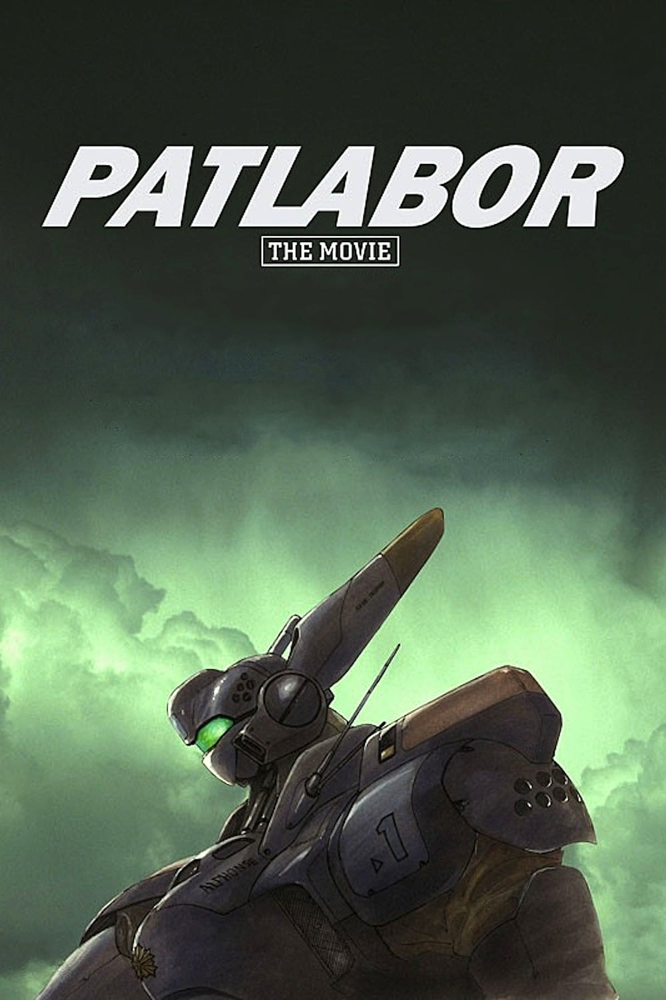
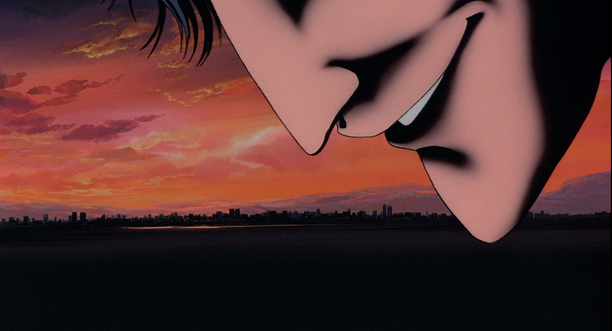
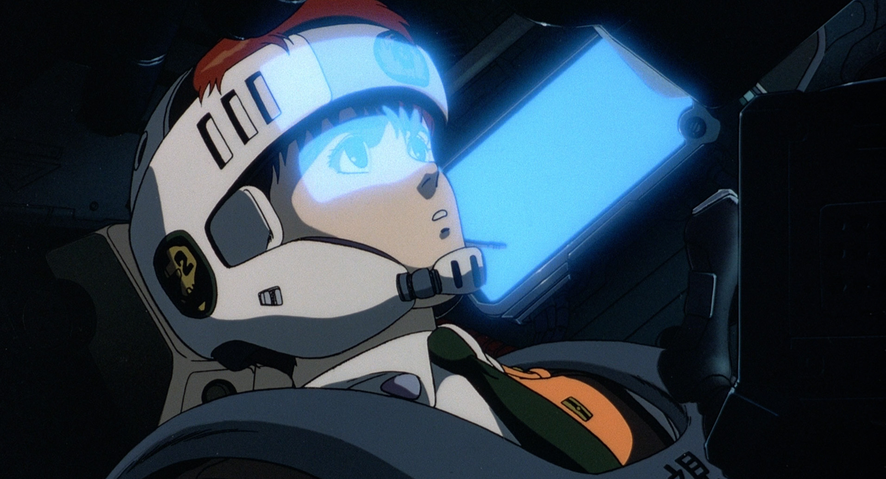
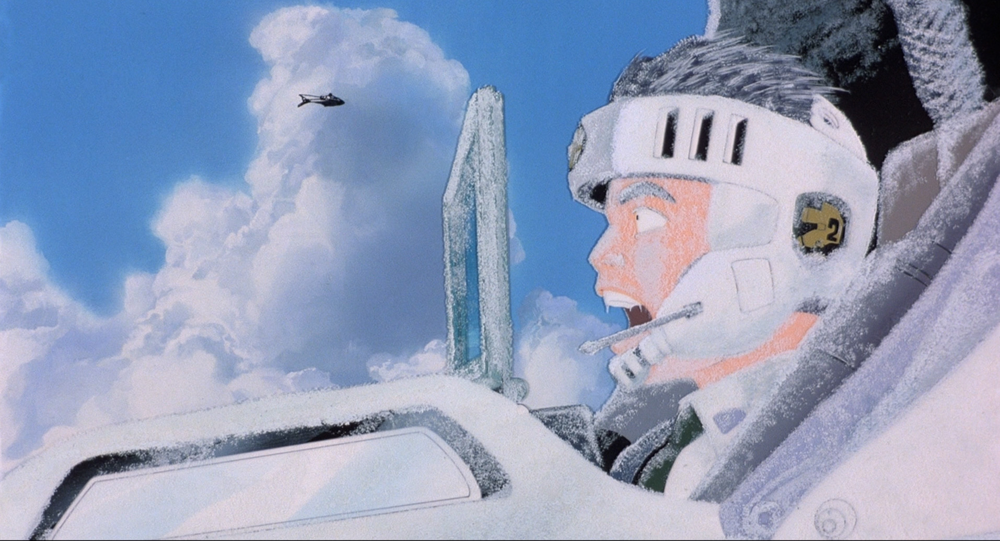
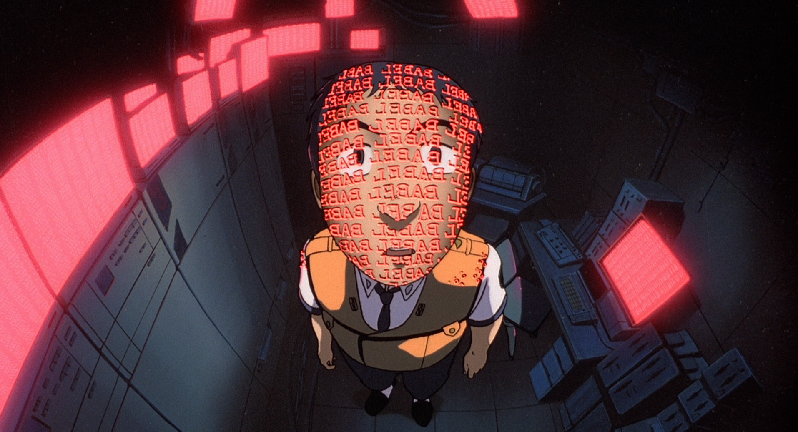
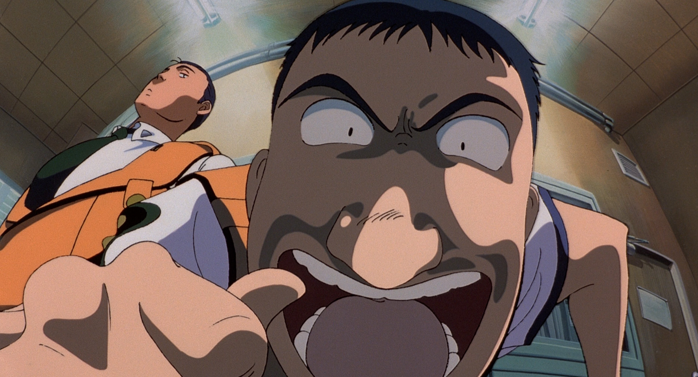
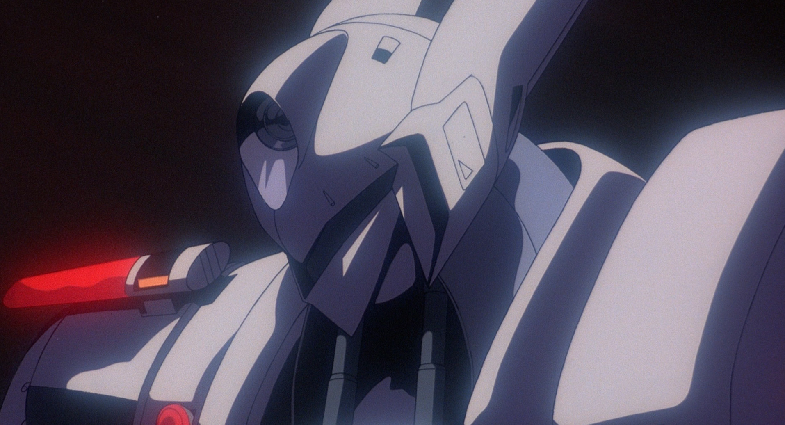

PRODUCTION INFORMATION
This was the first theatrical entry for the PATLABOR fracnhise, marking a very huge change for everyone at HEADGEAR (the creative group who works on this franchise). While there was plenty of ambition from the staff involved, the film faced numerous problems. At the time there was a lot of limitations regarding resources for it's production, so animators were left with using a ton of time and cost saving measures like drawing scenes in rush hour traffic or putting more emphasis on static detailed backgrounds rather than fluid movement. While there wasn't plenty of movement and action for a lot of the movie, it isn't absurd to say that these limitations put on HEADGEAR made for an impressive feeling film.
Luckily, the film was a box office success, and carried the momentum from the previous PATLABOR OVA series, "EARLY DAYS." Thanks to the film's success, more PATLABOR entries would get greenlit, and the franchise had an even brighter future to look forward to.
Release Date: July 15, 1989
Director: Mamoru Oshii
Studio: Studio Deen and Production I.G
STORY
At the top of a large structure in Toyko Bay, a scientist walks to the edge and, despite the cries of onlookers, throws himself into the sea to his death. Weeks later, the Special Vehicle Division (SVD) has had little respite due to a recent rash of Labor malfunctions resulting in massive citywide destruction.
No one seems to know the cause of the malfunctions; the only hint points to a cover-up involving a military-class Labor going on a rampage — without a pilot. It is soon evident that a disaster of massive proportions is taking shape, and only Gotou, Shinobu, and the SVD can counter it. If they succeed, they will be heroes... but if they fail, they will be the most hated villains in history.
CAST AND CREDITS
Original Work: HEADGEAR
Direction: Mamoru Oshii
Mechanical Design: Yutaka Izubuchi
Character Design: Akemi Takada
Soundtrack: Kenji Kawai
Storyboard: Mamoru Oshii
Script: Kazunori Itou
Animation Directors: Kazuchika Kise
Art Direction: Hiromasa Ogura
IMAGE GALLERY





